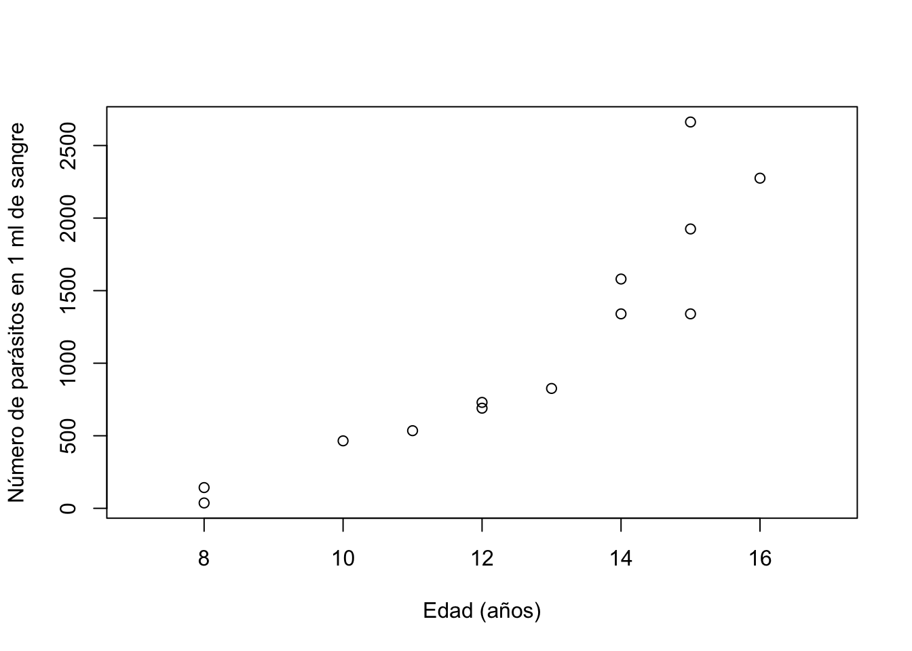
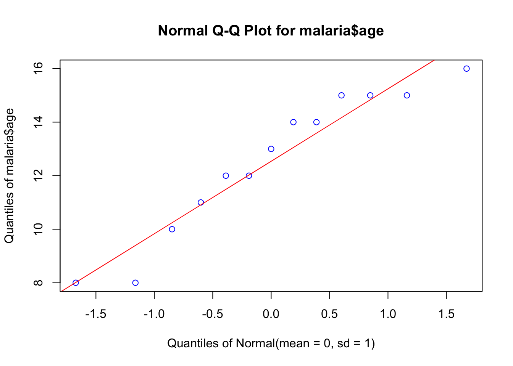
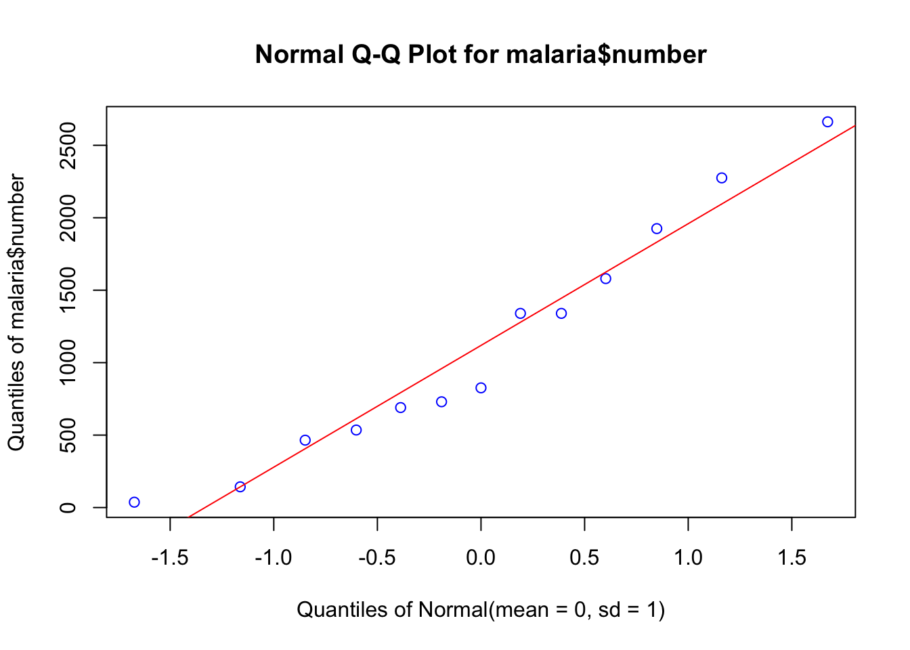
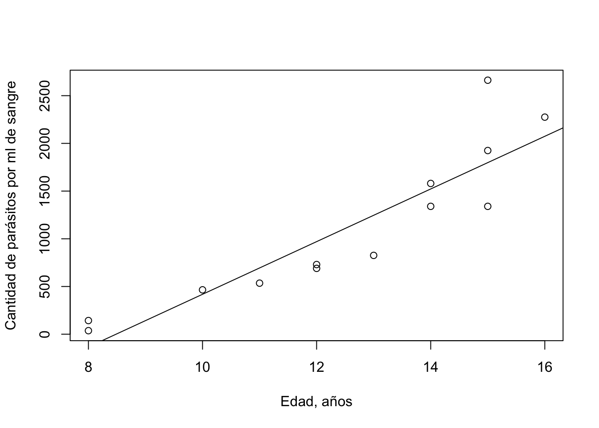
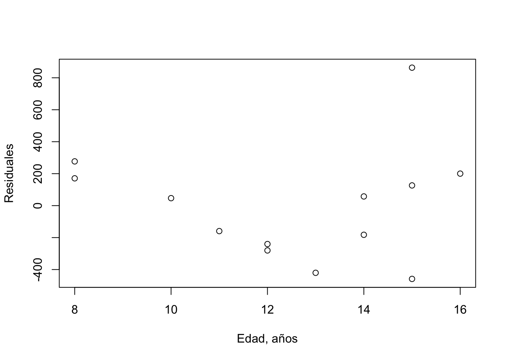
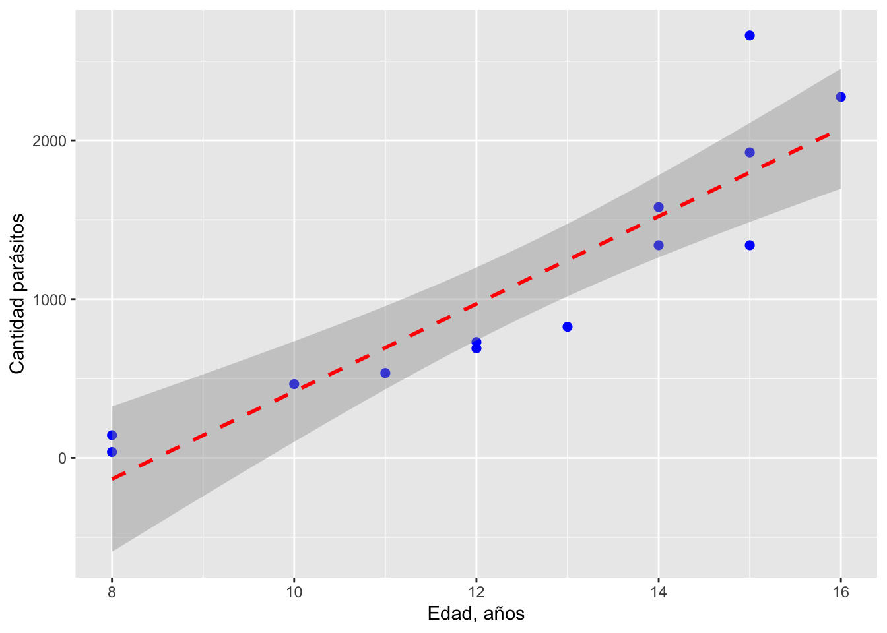
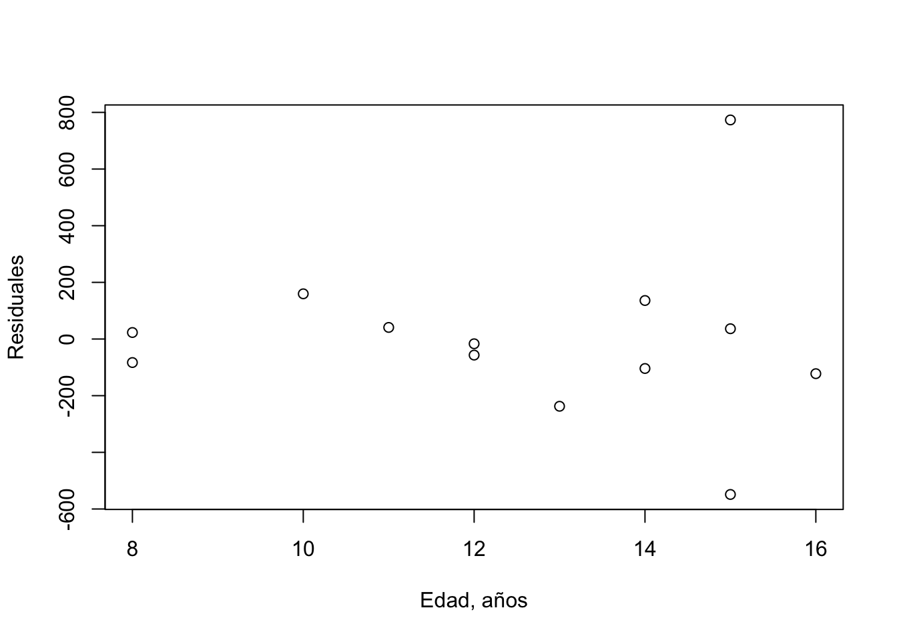
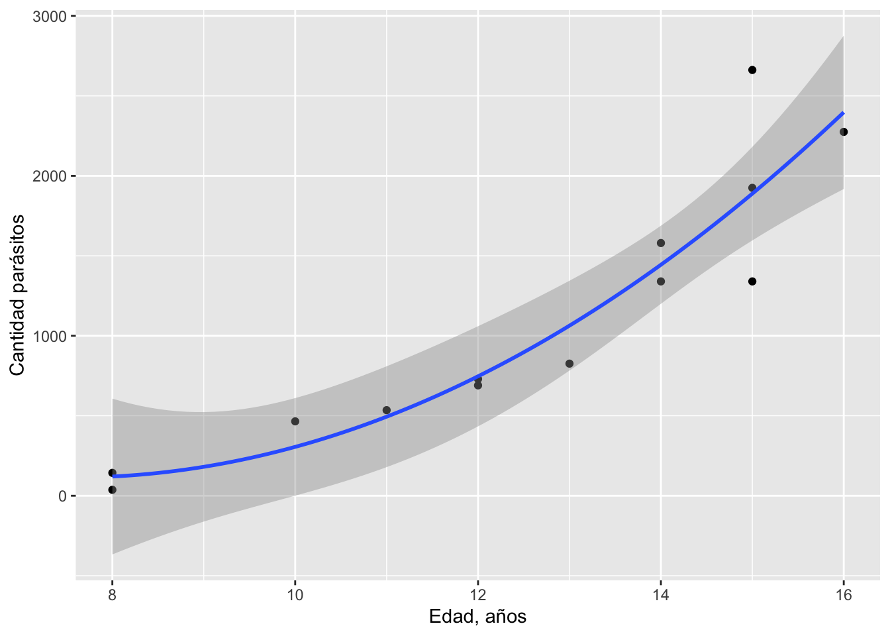

Deben tener previamente descargados los siguientes paquetes:
library(readxl)
library(knitr)
library(dplyr)
library(DT)
library(EnvStats)También deben descargar en su directorio (“folder”) de trabajo, el archivo mod_empiricos.xlsx que se encuentra en la carpeta del tema.
“An empirical model is based only on data and is used to predict, not explain, a system. An empirical model consists of a function that captures the trend of the data.” (Shiflet, 2014)
Los datos utilizados en un modelo empírico provienen de experimentos u observaciones y mediciones de las variables de interés, en los sujetos bajo estudio y/o su ambiente.
En un modelo de regresión, además de la posible asociación entre variables o correlación, establecemos una relación de causalidad entre una variable respuesta y una (regresión simple) o más (regresión múltiple) variables independientes.
Estaremos utilizando la regresión como una función, para capturar la tendencia y el ajuste de los datos. En un modelo de regresión, además de la estimación de los parámetros del modelo, podemos evaluar estadísticamente (mediante pruebas de hipótesis) el nivel de significancia de nuestro modelo, en comparación con un modelo de no relación entre las variables (o hipótesis nula).
Ejemplo 1: Infección con malaria: número de parásitos en 1 ml de sangre en niños de diversas edades.
malaria <- read_excel("data/mod_empiricos.xlsx",
sheet = "malaria")
#creando una tabla elegante
datatable(malaria,
filter = 'top', options = list(
pageLength = 15, autoWidth = TRUE
))#si no funciona el anterior, algo más sencillo
kable(malaria)| age | number |
|---|---|
| 12 | 730 |
| 8 | 143 |
| 16 | 2275 |
| 8 | 37 |
| 11 | 535 |
| 10 | 465 |
| 12 | 690 |
| 13 | 826 |
| 15 | 1340 |
| 14 | 1580 |
| 14 | 1340 |
| 15 | 1925 |
| 15 | 2662 |
##Modelo básico Supongamos que hay una variable cuantitativa \(X\) que nos puede dar información de \(Y\), entonces podemos explicar el valor esperado de \(Y\) (\(\mu_{Y|X}\)), en su más simple expresión, utilizando la siguiente ecuación:
\[\mu_{Y|X} = \beta_0 +\beta_1X\qquad(1)\] Y en su forma operativa, tenemos la siguiente ecuación para un modelo de regresión lineal simple:
\[y_i = \beta_0 + \beta_1x_i + e_i\qquad(2)\] donde:
\(y_i\) indica el valor específico de \(Y\) para el i-ésimo dato
\(\beta_0\) indica el valor esperado de \(Y\) cuando \(X = 0\) (intercepto de la regresión)
\(\beta_1\) indica el parámetro asociado a la variable predictora \(X\) (pendiente de la regresión); representa el cambio en el valor esperado de \(Y\) por unidad de cambio de \(X\)
\(x_i\) indica el valor específico de \(X\) para el i-ésimo dato
\(e_i\) indica el error aleatorio para el i-ésimo dato
###EJERCICIO 1: Representación gráfica de datos y definición de variables Volviendo a los datos de malaria en niños, nos preguntamos que relación existe entre la edad de los niños y el nivel de infección en la sangre, con el parásito.
número de parásitos en la sangre (\(Y\)) = número de parásitos al nacer \(\beta_0\) + cambio en número de parásitos por unidad de edad (\(\beta_1\)) x edad (\(X\))
no escribimos el error esperado, pero sabemos que está contenido en el modelo, como desviación (aleatoria e independiente) del verdadero valor de \(Y\) dado el valor de \(X\)
##Gráfica de los datos
plot(malaria$age, malaria$number, type = "p",
xlim = c(7,17),
xlab = "Edad (años)",
ylab = "Número de parásitos en 1 ml de sangre",
asp = NA)
##Supuestos para la regresión lineal El procedimiento de regresión lineal asume que se cumplen algunos supuestos:
#Q-Q plot para las variables
EnvStats::qqPlot(malaria$age, add.line = TRUE, points.col = "blue", line.col = "red")
EnvStats::qqPlot(malaria$number, add.line = TRUE, points.col = "blue", line.col = "red")
#prueba de Shapiro-Wilk
shapiro.test(malaria$age)##
## Shapiro-Wilk normality test
##
## data: malaria$age
## W = 0.91503, p-value = 0.2148shapiro.test(malaria$number)##
## Shapiro-Wilk normality test
##
## data: malaria$number
## W = 0.94677, p-value = 0.5503Para probar si la varianza de los residuales es constante, es decir que poseen homocedasticidad, utilizamos la prueba Goldfeld-Quandt, con una \(H_0:igualdad\:de\:varianza\), entre dos grupos de valores de residuales.
#Goldfeld-Quandt test
#Ho: varianzas iguales entre grupos de datos (baja y alta edad)
library(lmtest)## Loading required package: zoo##
## Attaching package: 'zoo'## The following objects are masked from 'package:base':
##
## as.Date, as.Date.numericgqtest(lm(formula = number ~ age, data = malaria))##
## Goldfeld-Quandt test
##
## data: lm(formula = number ~ age, data = malaria)
## GQ = 3.6893, df1 = 5, df2 = 4, p-value = 0.115
## alternative hypothesis: variance increases from segment 1 to 2Usaremos el método de los cuadrados-mínimos (‘least-squares’) para estimar los parámetros del modelo. Este método se basa en encontrar los parámetros \(\beta_0\) y \(\beta_1\) que minimicen la siguiente función:
\[S(\beta_0, \beta_1) = \sum {e_i}^2 = \sum (y_i - \beta_0 - \beta_1x_i)^2\]
Usando el procedimiento lm en R podemos estimar los parámetros del modelo.
rls <- lm(malaria$number ~ malaria$age)
summary(rls)##
## Call:
## lm(formula = malaria$number ~ malaria$age)
##
## Residuals:
## Min 1Q Median 3Q Max
## -458.60 -240.43 46.68 170.79 863.40
##
## Coefficients:
## Estimate Std. Error t value Pr(>|t|)
## (Intercept) -2342.24 511.05 -4.583 0.000786 ***
## malaria$age 276.06 39.93 6.913 2.54e-05 ***
## ---
## Signif. codes: 0 '***' 0.001 '**' 0.01 '*' 0.05 '.' 0.1 ' ' 1
##
## Residual standard error: 368.7 on 11 degrees of freedom
## Multiple R-squared: 0.8129, Adjusted R-squared: 0.7959
## F-statistic: 47.79 on 1 and 11 DF, p-value: 2.544e-05Y obtener una gráfica de la línea (función) de regresión.
plot(malaria$age, malaria$number,
xlab = "Edad, años",
ylab = "Cantidad de parásitos por ml de sangre")
abline(rls)
plot(malaria$age,residuals(rls),
xlab="Edad, años",
ylab="Residuales")
library(ggplot2)
ggplot(data=malaria, aes(x=age, y=number)) +
geom_point(pch=19, color="blue", size=2) +
geom_smooth(method="lm", color="red", linetype=2) +
labs(x="Edad, años", y="Cantidad parásitos")## `geom_smooth()` using formula 'y ~ x'
Vamos a tratar de mejorar el modelo anterior (curvatura y residuales) utilizando modelos polinomiales y transformaciones.
Hay que tener en cuenta que al utilizar estos procedimientos, debemos justificarlo sobre la base de un comportamiento hipotético (fundamentado) en la relación causa-efecto (aunque no se conozca el mecanismo específico).
Vamos a tratar un modelo cuadrático positivo (\(y = a*x^2 + b*x + c\)). Utilizaremos el procedimiento lm (‘linear model’), pero especificando un modelo cuadrático:
rpol <- lm(number ~ age + I(age^2), data=malaria)
summary(rpol)##
## Call:
## lm(formula = number ~ age + I(age^2), data = malaria)
##
## Residuals:
## Min 1Q Median 3Q Max
## -548.69 -104.06 -16.76 40.90 773.31
##
## Coefficients:
## Estimate Std. Error t value Pr(>|t|)
## (Intercept) 1937.97 2091.37 0.927 0.3759
## age -483.20 364.09 -1.327 0.2140
## I(age^2) 31.99 15.27 2.095 0.0626 .
## ---
## Signif. codes: 0 '***' 0.001 '**' 0.01 '*' 0.05 '.' 0.1 ' ' 1
##
## Residual standard error: 322.3 on 10 degrees of freedom
## Multiple R-squared: 0.87, Adjusted R-squared: 0.8439
## F-statistic: 33.45 on 2 and 10 DF, p-value: 3.719e-05Los nuevos residuales:
plot(malaria$age,residuals(rpol),
xlab="Edad, años",
ylab="Residuales")
Examinemos la nueva gráfica:
library(readxl)
library(ggplot2)
malaria <- read_excel("data/mod_empiricos.xlsx",
sheet = "malaria")
ggplot(malaria, aes(x = age, y = number)) +
geom_point(aes(x = age, y = number)) +
stat_smooth(aes(), method = "lm", formula = y ~ poly(x,2), se =TRUE, size = 1) +
labs(x="Edad, años", y="Cantidad parásitos")
En el ejercicio anterior pudimos comprobar que mejoramos el modelo y su ajuste a los datos, utilizando una función polinomial. Si usamos una función cúbica puede mejorar el ajuste general, pero el \(R^2\) ajustado (que depende del número de variables) no necesariamente mejorará, y estaremos sobre-ajustando los datos a un modelo. El problema principal del ‘overfitting’ es cuando no podemos explicar el significado de los términos incorporados al modelo. En este ejemplo, podemos hipotetizar que el componente cuadrático corresponde a un modelo de crecimiento del parásito en la sangre de los niños.
Otra manera de trabajar con los problemas de desviación de los puntos de una línea recta, falta de normalidad o falta de homocedasticidad, es usar transformaciones:
Abrir un nuevo documento RMarkdown:
Shiflet, A. 2014. Introduction to Computational Science, 2nd Edition. Princeton University Press, Princeton, New Jersey, USA.
Suárez, E., Pérez, C.M., Rivera, R., Martínez, M.N. 2017. Applications of Regression Models in Epidemiology. John Wiley & Sons, Inc., Hoboken, New Jersey, USA.